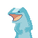
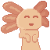

Dans Alter Maze vous jouez un petit mage qui doit s'échapper d'une tour dans laquelle il est enfermé.
Pour cela vous devez utiliser l'environnement pour modifier la structure de la tour et ainsi vous frayer un chemin vers la sortie.
Alter Maze est un jeu réalisé en 48h sur Unity avec une équipe de 8 personnes.
Le jeu a remporté l'UniJAM 2023.
J'ai participé au Game Design et au développement.
J'ai aussi réalisé toute l'UI du jeu.
Itch.io GitHub
Blob Art est un jeu de pixel art. Le joueur doit reproduire des pixels art en se déplaçant sur une grille.
Il est aussi possible de créer ses propres pixels art et de modifier les pixels art existant.
Ce jeu a été réalisé en Java avec la librairie LibGDX. L'équipe était composée de trois personnes. Pour ma part j'ai réalisé les graphismes du jeu et une grande partie du code.
Itch.io GitHub
Geckolot se joue à deux. Chaque joueur a une capacité spéciale : l'axolotl peut attirer le gecko à lui tandis que ce dernier peut repousser l'axolotl.
Les deux joueurs doivent s'entraider pour surmonter les obstacles de la grotte dans laquelle ils sont coincés.
Geckolot est un jeu réalisé en 48h pour la Globale Game JAM 2022 sur Unity avec une équipe de 8 personnes. J'ai participé au Game Design, Level Design et à la création de l'histoire.
Itch.io   GitHub